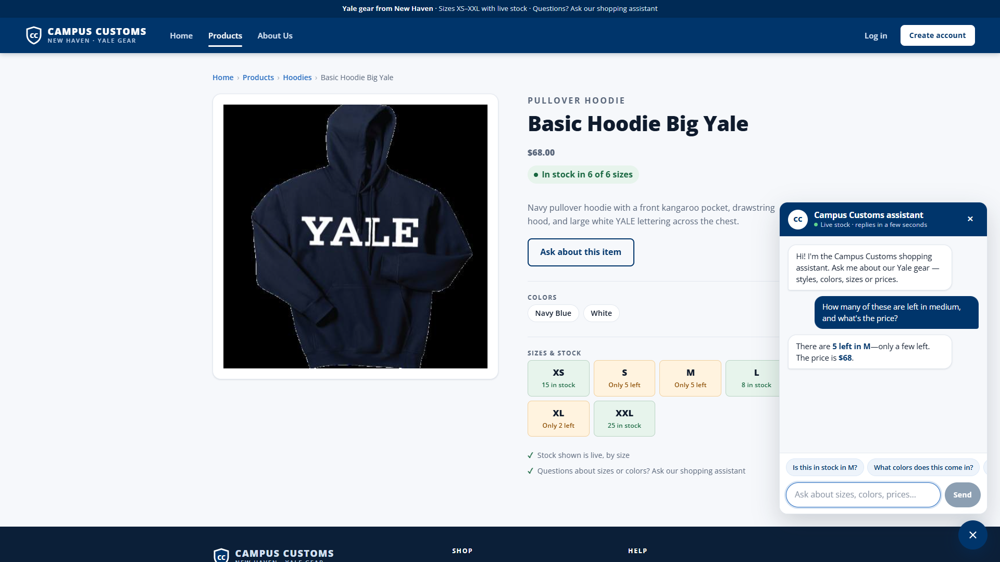
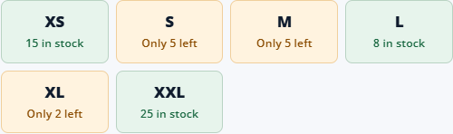
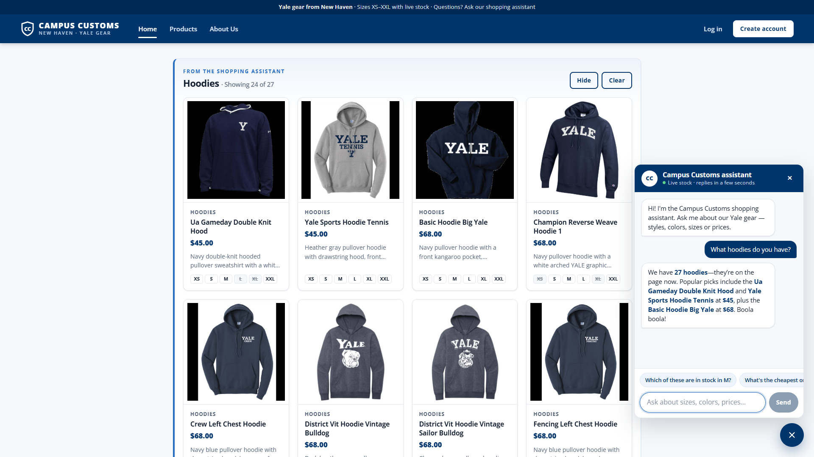
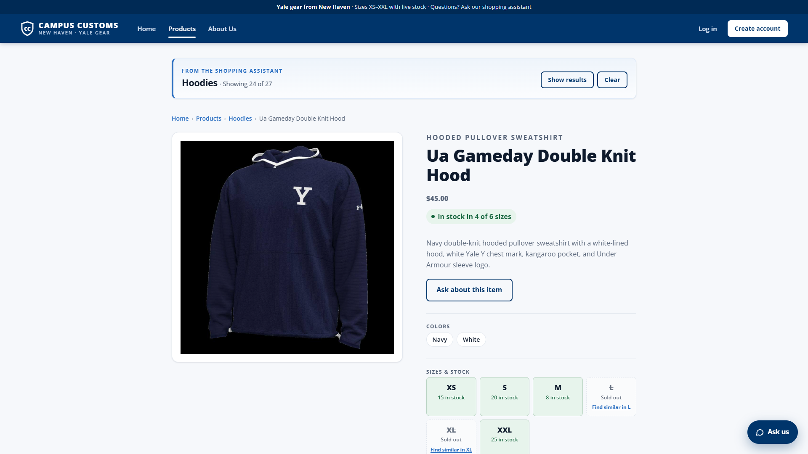
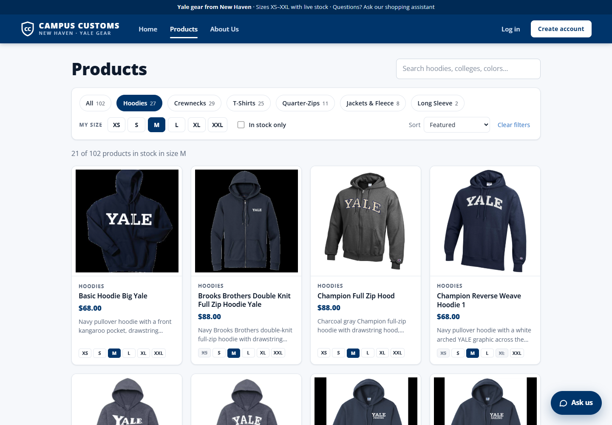
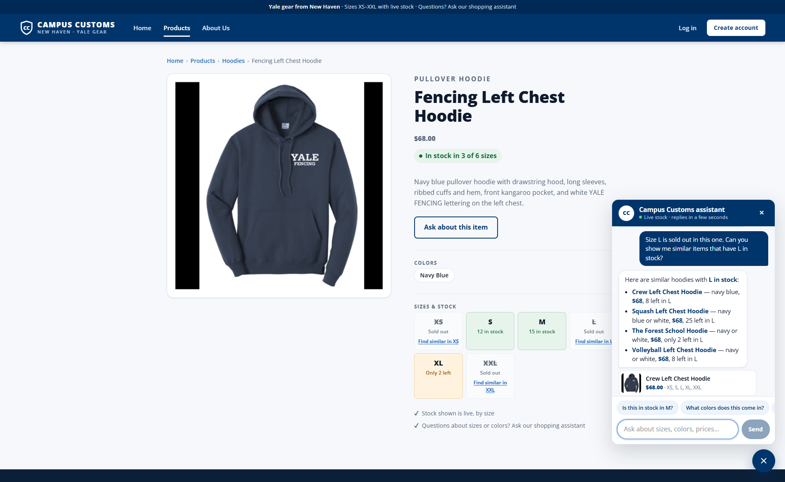

How this was tested
Each screenshot was taken from the running app: the React site at http://localhost:5173, plus the FastAPI backend started from backend/ with uvicorn main:app --reload --port 8000. The agent is the live PydanticAI agent (gpt-5.6-luna via Portkey).
A script drove a real Chrome browser (Playwright) like a shopper: it opened pages, clicked buttons and typed into the chat, then waited for the agent's real answer before each screenshot. It browsed as a guest, so nothing was saved to the database.
To check honesty, the script also read each product's real price and stock from the database (/api/products/<id>) and compared it with what the chat and the page showed.
| # | Check | Result |
|---|---|---|
| 1 | Chat checks an item's inventory and price | Pass: chat said 5 left in M at $68; database M = 5, price $68 |
| 2 | Category question puts search-result cards on the page | Pass: "Hoodies · Showing 24 of 27", all 24 cards are hoodies, and clicking one opened its product page |
| 3 | Problem 9 usability feature: shop by category and size | Pass: 21 hoodies in stock in M, exactly the 21 the database has |
1. Chat checks the inventory level of an item PASS
On the Basic Hoodie Big Yale product page, the shopper clicked Ask about this item and typed: "How many of these are left in medium, and what's the price?"

check_stock tool) instead of guessing. It worked out which item "these" meant from the page the shopper was on.
2. Dynamic search-result cards after a category question PASS
On the Home page, the shopper opened the chat and asked: "What hoodies do you have?"


3. Usability feature from Problem 9: shop by category and size PASS
On the Products page, the shopper clicked the Hoodies category and the size M.

/products?category=Hoodies&size=M), so the view can be shared.Also shown: "Find similar" for a sold-out size (Problem 9, improvement 4)

Click any screenshot to open it full size. Images are in app_check_images/ next to this file.
The screenshots also turned up two small layout bugs, which were fixed before the final run: white gaps around the top announcement bar, and a squeezed footer copyright line.